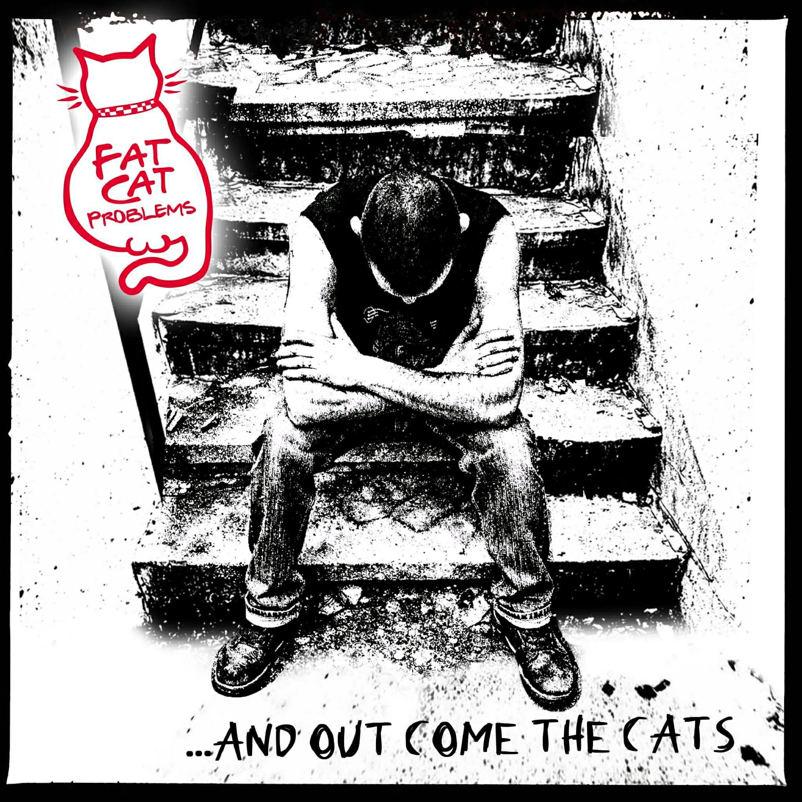
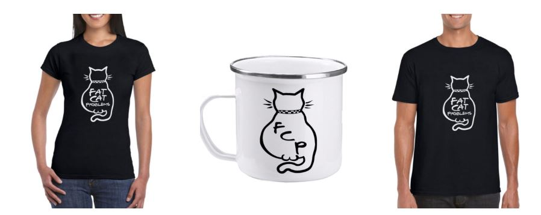

НОВО!
Излезе новото ни EP: ...And Out Come The Cats!

Това са 4те песни които съдържа:
- ⚡ Fat Cat Problems
- ⚡ Кумове
- ⚡ Мистериаозния шамароподавател (Мастика)
- ⚡ Роман за морските сънища (Глоба cover )
Работим по въпроса скоро да излезе целия албум с работно заглавие - За коня на Мърфи. Първите три песни от ЕР-то ще са част от него. Поне вече да има официален запис.
Кво стана
Концерт в Carve bar с Toy Letters!
Ето и линк към събитието:
FB Event

🐱 Нови тениски в мърча!
Вече имаме мърч с дебелия котарак. Поръчайте на all-merch.com.
Тениски, чанти, чаши и други пакости.

Кои сме ние?
Ние сме Fat Cat Problems. Свирим бърз ска-пънк, защото сме твърде мързеливи за сложни сола и твърде шумни за прилично общество. Рецептата: три тона, шест бири и достатъчно брас и бас, за да ви свирнат ушите до следващия вторник.
Бандата:
- 🎸 Кольо (Mr.KolBass) - Бас / Вокали
- 🥁 Мърфи - Барабани
- 🎺 Емо - Тромпет
- 🎸 Митко - Китара
- 🎺 Жорето - Тромбон
- 🎷 Ники - Саксофон
- 🍻 Асен - Мистериаозния алохолоподавател - напоител на групата
- 🎤 Радо - Вокали (понякога)
и от преди: Боби,Слави,Анди и Пепси
Антураж: звук и картинки - Александър, Преслав Петков - Paul, Даниел Димитров - Даниелката и Елица Жекова
Приятели & Support
👕 All Merch - за яките тениски
🤘 The Pit - нашият втори дом
🎨 Reklamer.bg - за дето ми се връзва на акъла за дизайни
🍻 BAR - за афтъра след концерта